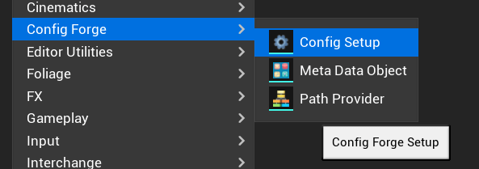
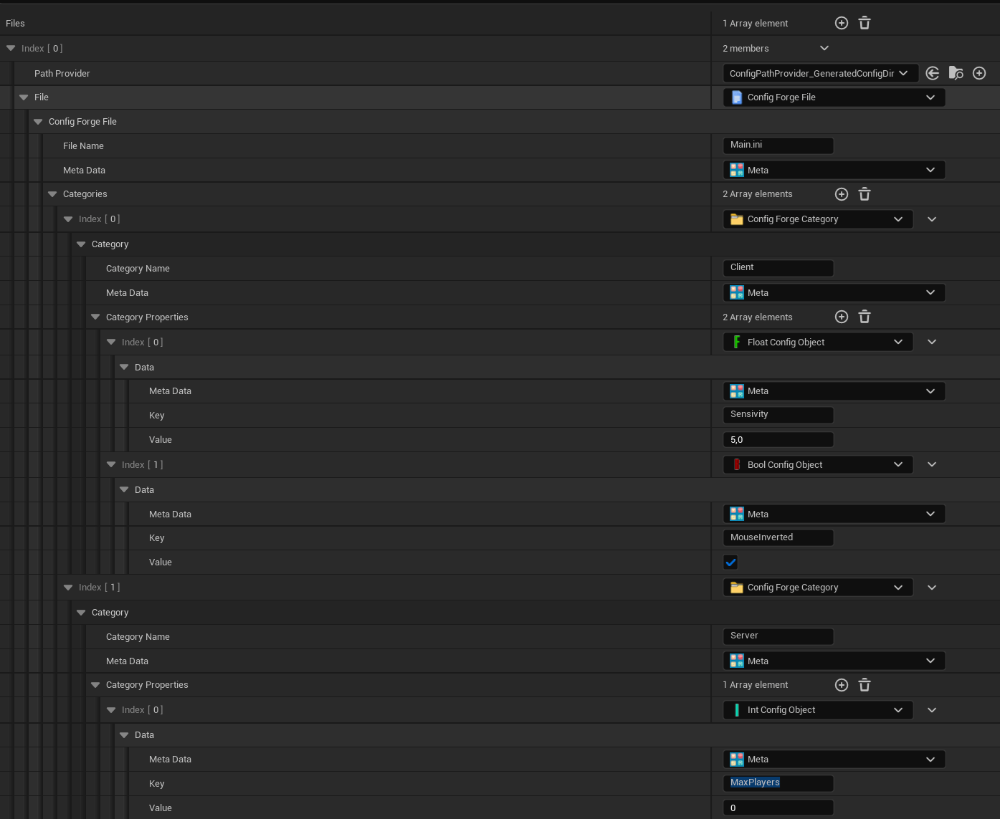
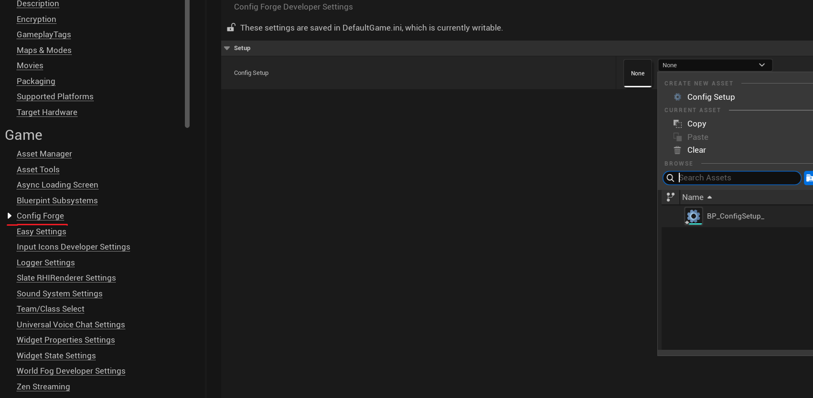
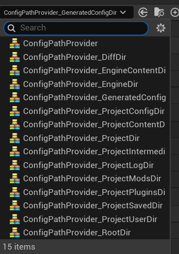
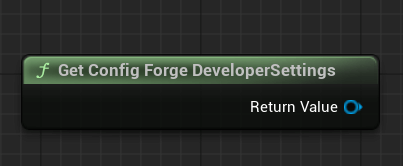
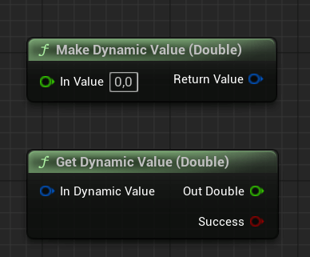
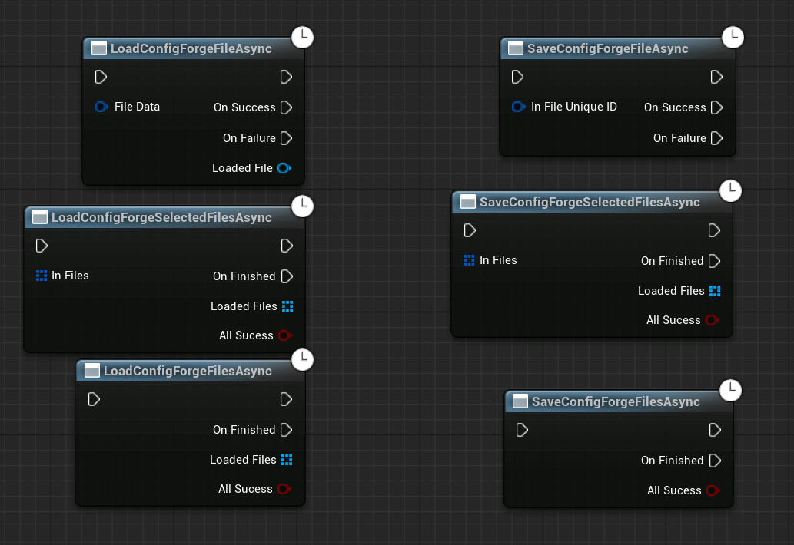
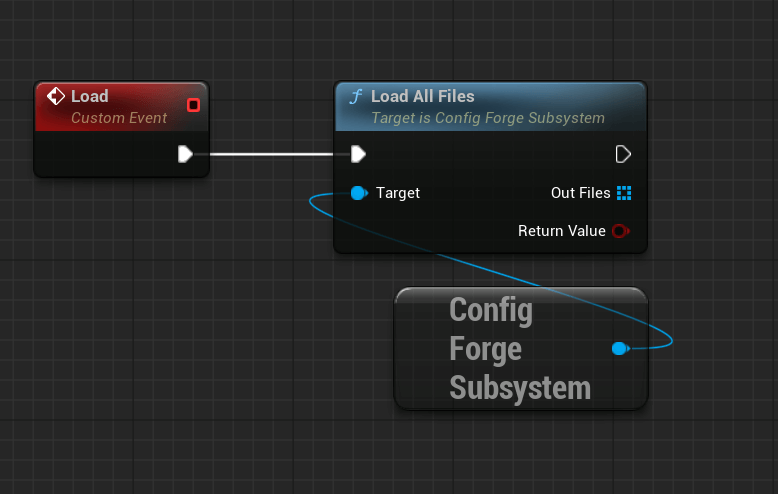
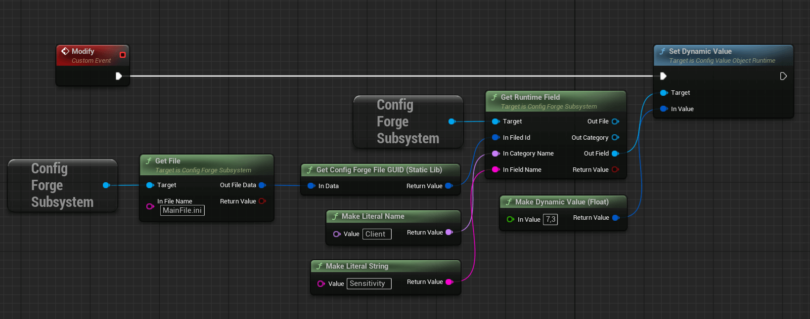
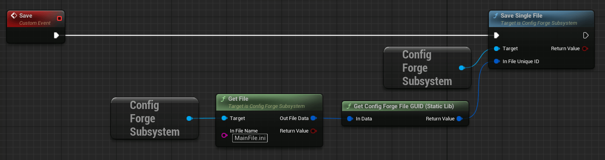

Config Forge
About the plugin
Author plugin written for Riftborn.
Plugin that offers a comprehensive system for managing game configurations. It breaks down game configurations into files, categories, and properties that can be easily accessed for both default game configurations, which are asset-based, and saved game configurations, which are stored on disk using a GameInstance system. The plugin supports synchronous or asynchronous loading or saving, offers flexible paths for saving, exposes functions to Blueprints, and offers functionality to be modified at runtime.
See Example
Setup
For the plugin to work, you need to create a few assets and configure them:
1. Create Config Setup Asset
Create a Config Setup. This is a basic asset that allows you to configure files, categories, and properties.

2. Configure Asset
Configure your asset as you see want.

Files
You can use the default files or create your own class for processing files.
You can choose where the file will be stored (Config Provider) and its name with the .ini extension.
Warning
Config Provider and Name are used to generate the ID, so do not create identical files, as this will cause the system to crash.
Categories
Each file can have a lot of categories.
Each category in the .ini file will be used via [CategoryName]
Warning
Do not use identical names for categories in the same file, otherwise the system will crash.
Fields
Each category can have fields. The plugin provides the entire set of .ini fields:
uint8, int32, int64, float, double, FString.
To create your own field type (e.g. array or FVector), inherit from UConfigValueObject in C++ and implement all methods.
Warning
Do not name fields in the same category identically. This may cause the system to crash.
Meta
Files, categories, and properties can have Meta Data. This is any object for custom settings.
Tip
You can create UConfigForgeMetaDataObject for a file that will contain a ENUM. Depending on the ENUM, you will decide whether you need to upload this file to the server, client, etc.
3. Configure Developer Settings
Select your assend in Project Settings / Config Forge

UConfigPathProvider
Path Provider determines which directory the file will be located in.

You can use the ready-made directories provided by the plugin, or create your own Path Provider.
Just implement
UConfigForgeDeveloperSettings
You can obtain this object in blueprints via

In C++ I recommend using
Tip
You can split the logic in C++ using #if WITH_EDITOR. This way, you will use one path in the EDITOR and another in the PACKAGED BUILD.
UConfigForgeFileRuntime
In Runtime, the plugin uses this class to store information about the file on the disk.
You can always use all these getters to obtain information about the file: its name, full path, Path Provider object, the asset you configured, and a unique ID.
FString GetFileName() const;
FString GetFullPath() const;
UConfigPathProvider* GetPathProvider() const;
ConfigForgeFile* GetFileAsset() const;
Info
This ID is used to obtain the runtime file object and can be easily obtained at runtime.
Tip
Always check whether the data is valid with the help of cpp bool IsValidData() const;
UConfigForgeCategoryRuntime
This object contains information about the category: Name, Asset, as well as all of its fields.
With the file loaded into RAM, you can get all of its categories.
You can also always get the file in which this category is located:
UConfigValueObjectRuntime
This object stores any information needed to write to or read from the disk. It is actually a field in an .ini file.
You can obtain the field name and the asset you configured:
You can find out which category this field object belongs to:
The following functions are used to set or retrieve FDynamicValue:
FDynamicValue
A universal structure for storing any data.
Unfortunately, blueprints are not that flexible, and most of the functionality of this structure is revealed in C++:
In C++, a structure can be created directly with a value.
The Blueprints have functions for creating and reading FDynamicValue, but only for the basic data types used in .ini files.

UConfigForgeSubsystem
The main subsystem for file manipulation
FConfigForgeFileData
struct CONFIGFORGE_API FConfigForgeFileData {
TSubclassOf<UConfigPathProvider> PathProvider;
TObjectPtr<UConfigForgeFile> File;
}
A structure that contains the PathProvider class and the file name with the extension.
FConfigForgeFileData GUID
You can generate a unique ID for the file:
Asset Functions
Get Settings
Gets the developer settings for the ConfigForge system.
Get SetupAsset
Retrieves the setup asset reference from developer settings.
Get File
Retrieves a specific asset configuration file by name.
Get Files
Retrieves all valid configuration files from the setup asset.
Get File Names
Retrieves the names of all configuration files in the [setup asset](#1-create-config-setup-asset.
Get File Categories By Name
Retrieves all category names from a file specified by name.
Get File Categories
Retrieves all category names from a file data structure.
Get Category Properties
void GetCategoryProperties(const FString& InFileName, const FName& InCategoryName, TArray<UConfigValueObject*>& OutProperties);
Retrieves all value objects from a specific category within a file.
Disk Read/Write Functions
Important
The subsystem can only perform one file operation at a time.
Therefore, it is not possible to use two asynchronous operations simultaneously. To check whether the subsystem is currently busy working on files, use:
Single File
Load Single File
Synchronously loads a single config file from disk.
Load Single File (Async)
Asynchronously loads a single config file from disk.
Save Single File
Synchronously saves a single loaded config file to disk.
Save Single File
Asynchronously saves a single loaded config file to disk.
All files
Load ALL Files
Loads all configuration files synchronously.
Load ALL File (Async)
Loads all configuration files asynchronously.
Save ALL Files
Saves all currently loaded runtime configuration filess synchronously.
Save ALL Files (Async)
Saves all currently loaded runtime configuration files asynchronously.
Selected Files
Load Selected Files
bool LoadSelectedFiles(const TArray<FConfigForgeFileData>& InFiles, TArray<UConfigForgeFileRuntime*>& OutFiles);
Synchronously loads a selected subset of config files into runtime files.
Load Selected Files (Async)
void LoadSelectedFilesAsync(const TArray<FConfigForgeFileData>& InFiles, FLoadAllForgeFileDelegate Callback);
Asynchronously loads a selected subset of config files into runtime files.
Save Selected Files
Saves selected loaded runtime configuration files synchronously.
Save Selected Files (Async)
Saves selected loaded runtime configuration files asynchronously.
Runtime Functions
Get Runtime File
Retrieves a loaded runtime file instance by its unique ID.
Get All Runtime Files
Retrieves all runtime configuration files currently loaded in the subsystem.
Get Runtime Categories
bool GetRuntimeCategories(const UConfigForgeFileRuntime* InConfigFile, TArray<UConfigForgeCategoryRuntime*>& OutCategories) const;
Retrieves all categories from a specific runtime configuration file.
Get Runtime Categories (By File ID)
bool GetRuntimeCategories_ID(const FGuid& InFileId, TArray<UConfigForgeCategoryRuntime*>& OutCategories) const;
Retrieves all categories from a runtime configuration file identified by its ID.
Get Runtime Category
bool GetRuntimeCategory(const UConfigForgeFileRuntime* InConfigFile, const FName& InCategoryName, UConfigForgeCategoryRuntime*& OutCategory) const;
Retrieves a specific category by name from a runtime configuration file.
Get Runtime Category (By File ID)
bool GetRuntimeCategory_ID(const FGuid& InFileId, const FName& InCategoryName, UConfigForgeCategoryRuntime*& OutCategory) const;
Retrieves a specific category by name from a runtime configuration file identified by its ID.
Get Runtime Field (Full info return)
bool GetRuntimeField_Full(const FGuid& InFiledId, const FName& InCategoryName, const FString& InFieldName,
UConfigForgeFileRuntime*& OutFile,
UConfigForgeCategoryRuntime*& OutCategory,
UConfigValueObjectRuntime*& OutField) const;
Retrieves a runtime field by providing its file ID, category name, and field name.
Get Runtime Field
bool GetRuntimeField(const UConfigForgeCategoryRuntime* InRuntimeCategory, const FString& InKey, UConfigValueObjectRuntime*& OutField) const;
Retrieves a specific field by key from a runtime category.
Get Runtime Field (By File Object)
bool GetRuntimeField_File(const UConfigForgeFileRuntime* InConfigFile, const FName& InCategoryName, const FString& InKey, UConfigValueObjectRuntime*& OutField) const;
Retrieves a specific field by key from a category within a runtime configuration file.
Get Runtime Field (By File ID)
bool GetRuntimeField_ID(const FGuid& InFileID, const FName& InCategoryName, const FString& InKey, UConfigValueObjectRuntime*& OutField) const;
Retrieves a specific field by key from a category within a runtime configuration file identified by its ID.
Get Runtime Fields
bool GetRuntimeFields(const UConfigForgeCategoryRuntime* InRuntimeCategory, TArray<UConfigValueObjectRuntime*>& OutFields) const;
Retrieves all fields from a runtime category.
Get Runtime Fields (By File Object)
bool GetRuntimeFields_File(const UConfigForgeFileRuntime* InConfigFile, const FName& InCategoryName, TArray<UConfigValueObjectRuntime*>& OutFields) const;
Retrieves all fields from a runtime category within a runtime configuration file.
Get Runtime Fields (By File ID)
bool GetRuntimeFields_ID(const FGuid& InFileID, const FName& InCategoryName, TArray<UConfigValueObjectRuntime*>& OutFields) const;
Retrieves all fields from a runtime category within aruntime configuration file identified by its ID.
Events
On All Files Loaded
Called when
UConfigForgeSubsystem::LoadAllFilesandConfigForgeSubsystem::LoadAllFilesAsyncfinishes loading.
On All Files Saved
Called when
UConfigForgeSubsystem::SaveAllFilesandConfigForgeSubsystem::SaveAllFilesAsyncfinishes saving.
On File Loaded
Called when any function has saved runtime file to disk.
On File Saved
Called when any function has loaded runtime file from disk.
On Value Changed (UConfigValueObjectRuntime)
Called when SetDynamicValue changes the value
Blueprint Async (K2) Nodes

All async function are exposed to blueprints via K2 Nodes
Blueprint Workflow Example
Load

Tip
You can load only the files you need based on the meta data object. For example, download only server configurations on the dedicated server.
Modify

Tip
You can store in variable the field object reference (pointer) and then change it in the widget. It will remain valid until you reload the file.
Save

Tip
You can only save the files you have changed. It is not necessary to load the disc and save all the files if you have a lot of them.
Misc
Info
You can create a naming system so that you don't have to name files manually and can easily change their names during development.